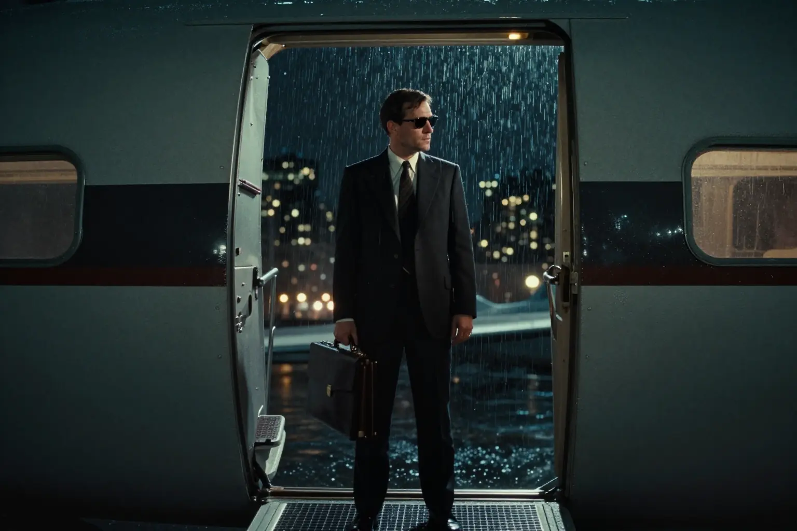

D.B. Cooper: The Only Unsolved Skyjacking in American History

It was the afternoon of Wednesday, November 24, 1971, in Portland, Oregon. It was the day before Thanksgiving, one of the busiest travel days of the year. A quiet man in a dark business suit walked up to the Northwest Orient Airlines counter at Portland International Airport. He paid $18.52 in cash for a one-way ticket to Seattle, Washington. He gave his name as Dan Cooper.
A few hours later, this man would carry out the strangest and most puzzling crime in American aviation history. It was a skyjacking, which means taking over a plane by force. It was so bold and so well planned that it is still the only unsolved case of air piracy in the history of commercial flying.
Cooper boarded Flight 305. It was a Boeing 727-100 carrying 36 passengers and 6 crew members. He ordered a bourbon and soda. Then he calmly handed a note to flight attendant Florence Schaffner. It read: “I have a bomb in my briefcase. I will use it if necessary. I want you to sit next to me. You are being hijacked.”
He showed her what looked like a bomb: red sticks, wires, and a battery. He demanded $200,000 in negotiable U.S. currency and four parachutes. He got exactly what he asked for.
Then, somewhere over the dark, rainy forests of the Pacific Northwest, he opened the rear stairway of the plane. The plane was flying at 10,000 feet, in temperatures near 7 degrees below zero. He stepped out into the night and vanished.
No body was ever found. No parachute was ever recovered. In the first search, nobody found any sure trace of the man or the money.
The early 1970s were a very different time for air travel. Airport security hardly existed. There were no metal detectors, no baggage X-rays, and no real identity checks. A person could walk onto an airliner with almost anything hidden on their body or in their bags.
Hijackings were shockingly common. Between 1968 and 1972, there were more than 130 attempted hijackings of U.S. airliners. That is about one every two weeks. Most were by people who wanted to be flown to Cuba, and most ended without serious injury. Airlines had set rules for dealing with hijackers. The rules said to cooperate and keep things calm.
In this setting, Dan Cooper boarded Flight 305 on that rainy November afternoon. The Boeing 727 was an ideal plane for a skyjacking. It was one of the few jets of that time with a rear stairway, called an “aft airstair,” that could be lowered in flight. People could leave the plane through the tail while it was in the air.
The stairway was made for emergency exits and for boarding at airports without jet bridges. It would prove vital to Cooper’s plan.
Cooper took seat 18E, a window seat in the last row at the back. He was described as a white man in his mid-40s. He was between 5 feet 10 inches and 6 feet tall, with an average build. He wore a dark business suit, a white shirt, a black tie with a mother-of-pearl tie clip, and a raincoat.
After takeoff, he ordered a bourbon and soda and lit a cigarette. Shortly after 3:00 PM, he handed a note to Florence Schaffner. At first she ignored it. She thought it was a lonely businessman’s phone number. Cooper leaned in and told her to read it.
The note, in neat capital letters, said he had a bomb and was hijacking the plane. Schaffner showed it to another flight attendant, Tina Mucklow. She was just 22 years old and fairly new to the job.
Cooper then opened his briefcase. Inside were eight red tubes that looked like dynamite, a tangle of wires, and a battery. He told Schaffner to write down his demands and take them to the captain.
His demands were precise and businesslike. He wanted $200,000 in negotiable U.S. currency, in twenty-dollar bills. He wanted four parachutes, two main and two reserve. And he wanted a fuel truck waiting in Seattle to refuel the plane.
The message went to the cockpit. Captain William Scott called Donald Nyrop, the president of Northwest Orient Airlines. Nyrop approved full payment and cooperation. The airline had a policy of giving hijackers what they asked, to protect passengers and crew. Nyrop saw no reason to change it. The FBI was told while the plane was still in the air.
Flight 305 landed at Seattle-Tacoma International Airport at 5:39 PM, about two hours late. Cooper let all 36 passengers go, and flight attendant Schaffner too. The money was delivered in a canvas bank bag. It was 10,000 twenty-dollar bills, and the FBI had written down every serial number. The four parachutes were handed over as well.
Cooper kept four crew members. They were Captain Scott, First Officer Bob Rataczak, Flight Engineer H.E. Anderson, and flight attendant Tina Mucklow. Mucklow stayed calm and professional through the whole ordeal. Later she gave the best description of the hijacker.
The FBI and the Seattle bank that supplied the money prepared it with care. Before it was delivered, the FBI recorded the serial number of every bill. The bills were a mix of Series 1963A and Series 1969 Federal Reserve Notes. All the serial numbers began with the letter “L,” which showed they came from the San Francisco Federal Reserve Bank. The money was tied in stacks and put in the bag.
Cooper also got the four parachutes he asked for. Two were NB-6 navy parachutes, the main kind. Two were NB-8 reserve parachutes. He had asked for military-style parachutes, not civilian sport chutes. He checked each one carefully before the plane took off again.
One of the reserve parachutes was later found to be useless. It had been used for demonstrations and was sewn shut. Cooper did not use it.
After refueling in Seattle, Flight 305 took off again at about 7:40 PM. It headed southeast with a flight plan for Mexico City. Cooper had named exact flight conditions. The plane was to fly at 10,000 feet, much lower than the usual 30,000 feet or more. The wing flaps were to be set at 15 degrees, and the landing gear was to stay down. That kept the speed low, at about 100 knots (115 mph). He ordered the cabin to be unpressurized and the rear stairway to be lowered.
The crew tried to talk him out of it. They warned that the plane could not reach Mexico City at that height and speed. Cooper was not worried. “It’s not a problem,” he said.
He seemed to know a lot about how the 727 performed and how the stairway worked. He also seemed to know the land below. The crew noticed that he recognized the city lights of Tacoma, Washington, as they flew south. This suggested he knew the geography of the Pacific Northwest.
At about 8:13 PM, somewhere over southern Washington or northern Oregon, the crew felt a pressure bump. It was a sudden change in cabin pressure, a sign that the rear stairway had been opened. The cabin turned very cold as freezing air rushed in. A warning light for the aft stairway came on in the cockpit.
Captain Scott called back on the intercom: “Is everything all right back there?” Flight attendant Mucklow answered: “He’s gone.” Cooper had jumped, or more exactly, lowered himself out of the stairway into the dark, rainy, freezing night.
The weather was harsh. At 10,000 feet it was about minus 7 degrees Fahrenheit (-14 degrees Celsius). There was freezing rain, strong wind, and thick cloud. Below lay thick forest and rough mountains. There were steep ravines, fast rivers, and dense stands of Douglas fir and western hemlock.
Investigators narrowed the jump zone to an area near the Lewis River, north of Portland, in Clark or Cowlitz County, Washington. The plane flew on to Reno, Nevada, and landed safely. Cooper was gone.
The FBI began one of the largest manhunts in American history. Its code name was NORJAK, short for Northwest Hijacking. Ground teams, helicopters, and small planes searched the wilderness for weeks. They found nothing. There was no body, no parachute, no money, no clothing, and no trace of Dan Cooper.
The hijacking changed aviation security for good. Within months, the Federal Aviation Administration (FAA) ordered that all Boeing 727 planes get a new device. It became known as the “Cooper vane.” It was a small wedge fitted to the rear stairway. It stopped the stairway from being lowered in flight.
The device was simple but effective. It used air pressure to lock the stairway shut whenever the plane was moving. No one could open the rear door in flight. The Cooper vane remains standard equipment on Boeing 727s to this day.
The hijacking also helped change airport security across the United States. In 1973, the FAA required metal detectors at all U.S. airports. This was a direct answer to the wave of hijackings in the late 1960s and early 1970s. The days of walking onto a plane with no checks were over.
The FBI’s NORJAK investigation was one of the longest and most thorough in its history. The case file grew to more than 60 volumes. It held thousands of leads, witness statements, lab reports, and suspect profiles. Over 45 years of active work, the FBI interviewed hundreds of suspects and followed thousands of tips from the public.
The FBI used the best methods of the time. It studied Cooper’s black J.C. Penney clip-on necktie, which he took off before he jumped. It gave a DNA profile. DNA is the code in every person’s cells that is different for each person. But the profile was only partial, and it has never been matched to anyone. The cigarette butts Cooper smoked on the flight were also collected and tested.
The FBI’s working theory was that Cooper probably did not survive the jump. The weather was extreme. He seemed not to have special skydiving gear. And the land below was rough and thickly wooded. In July 2016, the FBI announced that it was moving its resources to other priorities. That effectively ended the active investigation after 45 years. The case is officially still open but inactive.
The most important physical evidence was found not by the FBI but by an eight-year-old boy. In February 1980, Brian Ingram was playing on the sandy bank of the Columbia River at Tena Bar, west of Vancouver, Washington. He found three bundles of rotting twenty-dollar bills buried in the sand.
It was reported to the authorities. The FBI confirmed that the serial numbers matched the ransom money. A total of $5,880 was recovered, which was 294 bills. All came from the ransom. They were weathered and partly rotted, but still identifiable.
The find thrilled the investigators. The FBI began a hard search of the Tena Bar area, with divers, metal detectors, and ground-penetrating radar. Ground-penetrating radar sends signals into the earth to find hidden objects. No more money or evidence was found.
The discovery raised more questions than it answered. How did the money end up on a sandbar hundreds of miles downstream from the guessed jump zone? Tena Bar was not on the direct path of the Lewis River area where Cooper was thought to have landed.
Some investigators thought river currents had carried the money downstream over the nine years since the hijacking. Others said Cooper had survived the jump and buried or lost the money at Tena Bar after he landed. The bills were rotted but mostly whole. That suggested they had been out in the weather for a long time. But the exact timeline could not be worked out.
In 1986, a decaying parachute was found in the general search area. It could not be firmly tied to Cooper. In February 1978, a deer hunter had found a placard near the search zone. It held instructions for lowering the rear stairs of a Boeing 727. This showed that at least some debris from the plane had reached the ground in the area.
In 2003, the FBI returned some of the recovered money to Brian Ingram, now an adult. He sold parts of it at auction. Single bills sold for many times their face value as collectors’ items.
Over the decades, the FBI looked at hundreds of suspects. None was ever charged. One of the best known was Richard Floyd McCoy Jr. In April 1972, just five months after Cooper, he did almost the same thing. He hijacked a Boeing 727 and used the same rear-stairway method. McCoy was caught, convicted, and sentenced to 45 years in federal prison. He escaped in 1974 and was killed in a gunfight with FBI agents. Despite the likeness, McCoy did not match the flight attendants’ description. He was ruled out.
Duane Weber was a career criminal who died in 1995. His wife, Jo Weber, said he had confessed on his deathbed. She said he told her, “I’m Dan Cooper.” The FBI looked into Weber closely but found no sure match.
Kenneth Christiansen was a former Army paratrooper and airline worker. He had some links to the case that were not certain, but the FBI found no clear proof. Robert Rackstraw was a Vietnam veteran and explosives expert. The author Tom Colbert named him as a suspect. But the FBI found no conclusive evidence tying him to the crime.
Other suspects included William Gossett, named by his son. There was also Barbara Dayton, a transgender pilot, and Sheridan Peterson, and dozens more. In every case, the evidence was weak, unclear, or contradictory. The man who called himself Dan Cooper has never been identified.
The hijacker never actually called himself “D.B. Cooper.” He gave his name as “Dan Cooper” when he bought his ticket. The “D.B.” came from a media mistake. An early news report mixed up Cooper’s alias with the name of a different suspect, who was briefly investigated and cleared. Even so, “D.B. Cooper” stuck in the public mind. It became one of the most famous false names in American crime history.
The real name “Dan Cooper” may itself have come from a Belgian comic book hero. He was a Canadian fighter pilot whose adventures included skydiving. The comics were published in the 1960s and 1970s. Did the hijacker choose the name on purpose, as a nod to the comic? Or did he simply pick a plain, common name? Nobody knows.
The flight attendants described Cooper as calm, polite, and well-spoken. He ordered a second bourbon and soda during the hijacking and tipped the flight attendants. He showed no nervousness, even while handling what he said was a bomb. “No funny stuff,” he told Schaffner at one point. That was as close as he came to a threat.
His careful planning, calm manner, and total disappearance have made D.B. Cooper a lasting American folk hero. To many people, he is a criminal who outsmarted the system and got away clean.
D.B. Cooper remains one of the most fascinating mysteries in American history. It has the daring of a Hollywood thriller and the frustration of a cold case that will not be solved. The evidence is mixed and tempting. The ransom money found on the Columbia River sandbar proves that at least some of the cash survived. But where it was found raises more questions than it answers.
There was no body. So either Cooper survived the jump and escaped, or his remains were lost in the huge, rugged wilderness of the Pacific Northwest. It is so thickly forested and remote that bodies can go unfound for decades.
The FBI’s working theory is that Cooper probably did not survive, given the harsh conditions and his lack of special gear. But the Bureau has said this is only a theory, not a conclusion. The case file sits in the National Archives.
Did Cooper die in the wilderness that November night? Did he live out his days under a false name? Or did he simply disappear into the legend that carries his false name? We may never know. And perhaps that is just how he wanted it.
References & Further Reading
Wikipedia: Boeing 727 — The aircraft type used in the hijacking, notable for its aft airstair
📚 Recommended Reading: The D.B. Cooper Hijacking by Kay Melchisedech Olson (on Amazon) — As an Amazon Associate, we earn from qualifying purchases.
Editorial note: The D.B. Cooper case is documented through FBI investigation files, National Archives records, and extensive journalistic and historical research. See our Editorial Policy.